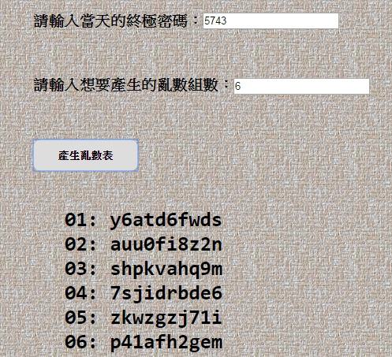

《前情提要》
好密碼的條件：愈長、愈亂、愈與個人資料無關。問題是，這樣子的密碼會不會就愈記不住？
於是，小明就想啦－－既然記不住，不如就將密碼寫下來，例如，銀行密碼就寫在提款卡的背面，但是，最重要就是但是：不要直接寫。
「不要直接寫」是怎麼回事!!??
原來，他參考了davidbau.com寫了一支亂數產生器。
在這個亂數產生器中，只要輸入任一數字 即可產生亂數表。
例如輸入"1234"的話，就產生了下列的亂數結果：
01: 3499305845
02: 1769646932
03: 3175789704
04: 4592818053
05: 1597861333
06: 4414077977
07: 2122376182
08: 1169150223
09: 6149827002
10: 1990694015
接下來，在提款卡背面寫下:13、31、62、18、32、62、73、43
他的意思是：密碼源自於亂數表中的結構：
第一個字元是第一橫列，第三直欄，也就是 9；
第二個字元是第三橫列，第一直欄，也就是 3；
(以下類推...)
| 01 | 3 | 4 | 9 | 9 | 3 | 0 | 5 | 8 | 4 | 5 |
| 02 | 1 | 7 | 6 | 9 | 6 | 4 | 6 | 9 | 3 | 2 |
| 03 | 3 | 1 | 7 | 5 | 7 | 8 | 9 | 7 | 0 | 4 |
| 04 | 4 | 5 | 9 | 2 | 8 | 1 | 8 | 0 | 5 | 3 |
| 05 | 1 | 5 | 9 | 7 | 8 | 6 | 1 | 3 | 3 | 3 |
| 06 | 4 | 4 | 1 | 4 | 0 | 7 | 7 | 9 | 7 | 7 |
| 07 | 2 | 1 | 2 | 2 | 3 | 7 | 6 | 1 | 8 | 2 |
| 08 | 1 | 1 | 6 | 9 | 1 | 5 | 0 | 2 | 2 | 3 |
| 09 | 6 | 1 | 4 | 9 | 8 | 2 | 7 | 0 | 0 | 2 |
| 10 | 1 | 9 | 9 | 0 | 6 | 9 | 4 | 0 | 1 | 5 |
那銀行密碼就是：93481429。
《然而，就像唐老大的飆車人生第八集即將上映一樣...》
小明心念一轉，似乎對前作還不夠滿意...
於是乎，他決定在原本的亂數產生器的基礎上，再增加兩種英數混合的功能：
除此之外，每組亂數產生器也可以選擇產生的組數：
「太好了!!以後就只需記得例如 1234 這組密碼即可。」，看到了有初步的成果，小明不禁歡呼，並決定用雞排和珍奶來暫時結束這一回合...